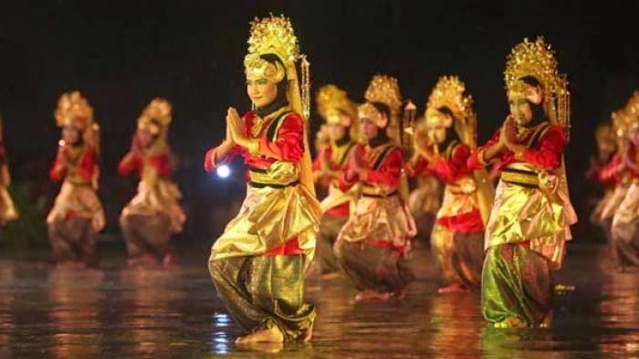
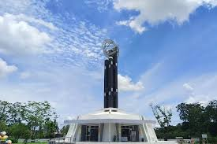
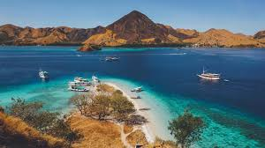
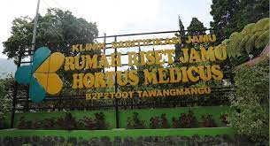

Tari Sekato yang Penuh Semangat dan Kebersamaan dari Jambi
Tari Sekato adalah tarian tradisional yang berasal dari Jambi. Tarian ini biasanya ditarikan oleh sekelompok penari dengan gerakan yang dinamis dan ritmis. Iringan musik yang khas menambah semarak suasana tarian. Tari Sekato sering dipentaskan dalam berbagai acara perayaan, penyambutan tamu, maupun sebagai hiburan. Tarian ini mencerminkan kegembiraan dan kebersamaan masyarakat Jambi.
Keunikan Tari Sekato terletak pada gerakan-gerakannya yang enerjik dan kostum penari yang berwarna-warni. Kekompakan dan semangat para penari dalam membawakan tarian ini sangat memukau. Tari Sekato bukan hanya sekadar hiburan, tetapi juga menjadi media untuk mempererat tali persaudaraan dan melestarikan nilai-nilai budaya Jambi. Keberadaannya memperkaya khazanah seni tari tradisional Indonesia.
full story updated 12 minutes ago
Informasi
Penemuan fosil Homo Erectus atau yang lebih dikenal dengan “Manusia Jawa” di situs arkeologi Sangiran di Jawa Tengah, menunjukkan bahwa kepulauan di Indonesia sudah dihuni oleh manusia purba, setidaknya sejak 1,5 juta tahun yang lalu. Selain Homo Erectus, Homo Floresiensis atau yang disebut sebagai nenek moyang manusia modern juga ditemukan di Indonesia, tepatnya di Liang Bua, Pulau Flores, Nusa Tenggara Timur. full story
- Bahasa Sunda Campuran
- Tirta Gangga: Taman Air Kerajaan yang Memukau di Bali Timur
- PUMA Museum (Putrawan Museum of Tribal Art)
- Museum Sarkofagus
Gastronomy
 Pempek Nori, Inovasi Baru Pempek
Kekinian
Pempek Nori, Inovasi Baru Pempek
KekinianPempek nori menghadirkan inovasi unik dalam kuliner khas Palembang. Perpaduan adonan ikan yang lembut dengan lembaran nori menciptakan cita rasa gurih dan sedikit asin yang khas. Saat digoreng, lapisan luar menjadi renyah sementara bagian dalamnya tetap kenyal. Disajikan dengan kuah cuko yang asam manis, sensasi rasa pempek ini semakin kaya. full story
- Bahasa Sunda Campuran
- Tirta Gangga: Taman Air Kerajaan yang Memukau di Bali Timur
- PUMA Museum (Putrawan Museum of Tribal Art)
- Museum Sarkofagus


Rawa Onom: Misteri dan Tradisi Sakral di Jawa Barat
Rawa Onom dikenal sebagai rawa sakral yang terletak di Jawa Barat dan menjadi bagian penting dalam kehidupan spiritual masyarakat sekitar. Banyak kisah mistis yang mengelilingi Rawa Onom, sehingga setiap tahun digelar ritual adat untuk menjaga keharmonisan antara manusia dan alam. Full Story

Tugu Khatulistiwa, Penanda Garis Imajiner Penting di Pontianak
Di Kalimantan Barat, tepatnya di jantung Kota Pontianak, berdiri kokoh sebuah monumen yang menjadi kebanggaan lokal dan daya tarik unik berskala internasional, yaitu Tugu Khatulistiwa.Full Story
Pantai Parangtritis: Daya Tarik Wisata yang Penuh Cerita
Pantai Parangtritis seperti lukisan yang sangat mahal dan tak boleh disentuh sembarangan, kamu bisa mengunjunginya namun hanya sebatas melihat lautnya saja dari bibir pantai.Full Story

Bahoi Ecotourism Village: Desa Wisata Ekowisata di Likupang yang Wajib Dikunjungi
Bahoi Ecotourism Village adalah sebuah desa wisata yang fokus pada pengembangan ekowisata bahari berbasis masyarakat di Desa Bahoi, Kecamatan West Likupang, Kabupaten Minahasa Utara. Wilayah ini memiliki status sebagai desa ekowisata laut yang tengah dipromosikan oleh pemerintah dan komunitas lokal karena potensi alamnya yang luar biasa, terutama di sektor konservasi laut dan budaya masyarakat pesisir. Full Story

Rumah Riset Jamu Hortus Medicus: Pusat Herbal di Tanah Jawa
Rumah Riset Jamu Hortus Medicus adalah pusat edukasi dan riset jamu serta obat herbal yang berlokasi di Tawangmangu, Karanganyar, Jawa Tengah. Tempat ini menjadi wadah bagi para peneliti, akademisi, dan pelaku industri herbal untuk mengembangkan obat herbal berbasis bukti ilmiah. Full Story

Blog Entries
Keindahan Alam Indonesia
Posted byKadang pernah terpikir bahwa dengan majunya teknologi dan ilmu pengetahuan membuat kehidupan dibumi ini menjadi lebih baik.
Pantai Nemberala Tempatnya Peselancar Dunia
Posted byPantai Nemberala terletak di Desa nemberala, Kecamatan Rote Barat, Kabupaten Rote Ndao, Provinsi Nusa Tenggara Timur.